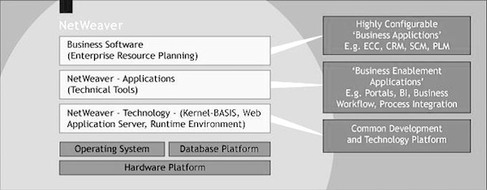

SAP NetWeaver Overview
NetWeaver at a Glance
SAP NetWeaver describes all the software and services used for 'Business Enablement'. The SAP Business suite, such as ECC or SRM, contains the software components for that specific business solution.
SAP NetWeaver is an open technology platform that offers a comprehensive set of technologies for running mission-critical business applications and integrating people, processes, and information.
SAP NetWeaver is a web-based, open integration, application platform that serves as the foundation for enterprise service-oriented architecture (enterprise SOA) and allows the integration and alignment of people, information, and business processes across business and technology boundaries.
It utilizes open standards to enable integration with information and applications from almost any source or technology.
SAP NetWeaver is the foundation of SAP Business Suite and SAP Business by Design. It also powers partner solutions and customer custom-built applications.

SAP NetWeaver Components
- SAP NetWeaver Application Server: It supports platform-independent web services, business applications, and standards-based development.
- SAP NetWeaver Business Warehouse: It enables data integration and transforms it into timely business information.
- SAP NetWeaver Gateway: It allows developers to create applications linking business users to SAP software.
- SAP NetWeaver Master Data Management: Ensures data consistency and integrates business processes.
- SAP NetWeaver Process Orchestration: Improves processes, from simple workflows to integrated processes.
- SAP NetWeaver Portal: Unifies information and applications for role-based views.
- SAP Auto-ID Infrastructure: Integrates automated sensing devices.
- SAP NetWeaver Identity Management: Addresses access and provisioning issues.
- SAP NetWeaver Information Lifecycle Management: Allows data archiving according to retention rules.
SAP NetWeaver Tools
- Adaptive Computing Controller: Central point of control for assigning computing resources.
- SAP NetWeaver Composition Environment: Environment for design, deployment, and running composite applications.
- SAP NetWeaver Developer Studio: User interface for developing J2EE applications.
- SAP NetWeaver Visual Composer: Simplifies portal content and analytics application creation.
- SAP Solution Manager: Facilitates technical support for distributed systems.
SAP NetWeaver Applications
- SAP NetWeaver Enterprise Search: Provides a simple and secure gateway to enterprise objects and transactions.
- SAP NetWeaver Single Sign-On: Offers a comprehensive single sign-on solution.